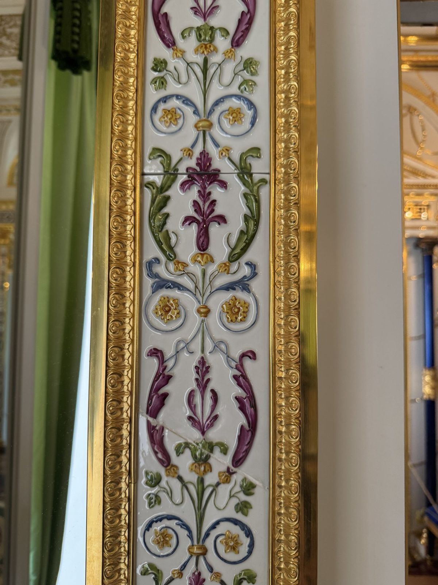

Фарфоровые плитки Зеркального кабинета Зубовского флигеля

Зубовский флигель Екатерининского дворца хранил личные апартаменты Екатерины II. Убранство помещений было утрачено в годы Великой Отечественной войны; в 2019–2024 годах интерьеры воссоздали, и 25 декабря 2024 года новый музейный маршрут открылся для посетителей.
Плитки по историческому фрагменту
Для Зеркального кабинета «Паллада» изготовила фарфоровые плитки по сохранившемуся историческому фрагменту. В новых элементах воспроизвели пластику рельефа и цвет расписного декора. Подлинный фрагмент включили в восстановленную композицию.
В интерьере
Рельефные расписные плитки размещены между зеркальными поверхностями и образуют самостоятельную часть архитектурного убранства кабинета. Готовый интерьер вошёл в экспозицию «Екатерина II. Личное пространство».